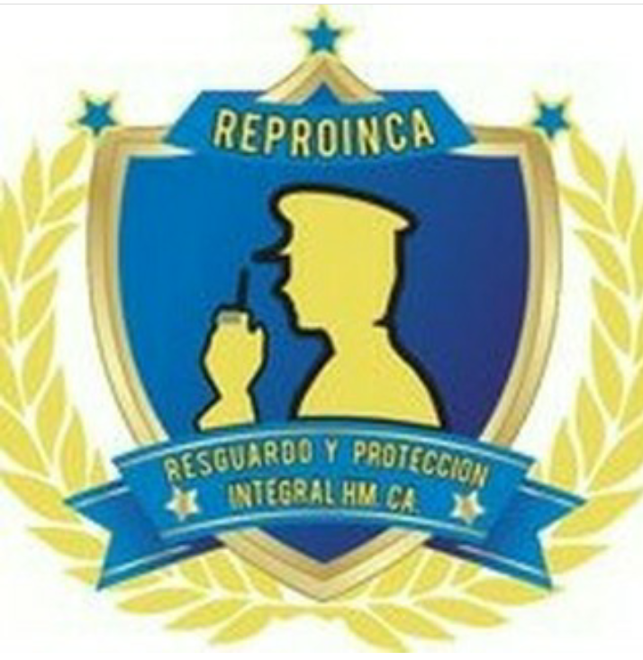
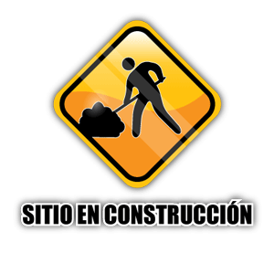
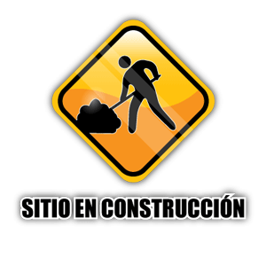

* Estudio de vulnerabilidad.
* Diseño e implementación de sistemas y procedimientos de prevención.
* Inteligencia empresarial.
* Programas de reducción y control de perdidas, por medio de manuales de procedimientos según las normas de nuestros clientes.
* Observación (Dinámica y estática).
* Control y acceso (empleados, visitantes, proveedores, clientes, entre otros).
* Control de materiales (recepción y despacho).
* Control de mermas de inventario.
* Prevención y protección contra el vandalismo.
* Control de orden público.
* Administración y control de estacionamiento.

Seguridad Corporativa
Nuestro servicio de seguridad corporativa ofrece:
* Diagnostico de control y prevención.* Estudio de vulnerabilidad.
* Diseño e implementación de sistemas y procedimientos de prevención.
* Inteligencia empresarial.
* Programas de reducción y control de perdidas, por medio de manuales de procedimientos según las normas de nuestros clientes.
* Observación (Dinámica y estática).
* Control y acceso (empleados, visitantes, proveedores, clientes, entre otros).
* Control de materiales (recepción y despacho).
* Control de mermas de inventario.
* Prevención y protección contra el vandalismo.
* Control de orden público.
* Administración y control de estacionamiento.
